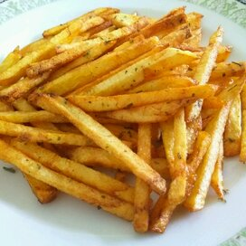

French Fried Potatoes Recipe

Description:
These are the best French Fries - the sugar solution has something to do with the carbohydrates, but by doing it they don't soak up so much grease, so they get crunchy.
Ingredients:
- ⅓ cup white sugar
- 2 cups warm water
- 2 large russet potatoes - peeled, and sliced into 1/4 inch strips
- 6 cups vegetable oil for frying
- salt to taste
Steps:
- In a medium bowl, dissolve the sugar in warm water. Soak potatoes in water mixture for 15 minutes. Remove from water, and dry thoroughly on paper towels.
- Heat oil in deep-fryer to 375 degrees F (190 degrees C). Add potatoes, and cook until golden, 5 to 6 minutes. drain on paper towels. Season with salt to taste.